RabbitMQ
Table of Contents
| Author | Hao Ruan (haoru@cisco.com) |
| Date | 2019-05-06 14:42:25 |
Table of Contents
1 消息标签
- AMQP 用标签表述消息，由一个交换器名称和可选的主题标记组成。
- 在消息的路由过程中，消息的标签并没有随 payload 一起传递，如果需要明确知道是谁生产的 AMQP 消息的话，就要看生产者是否把发送方信息放入 payload 中。
2 AMQP Protocol
- 当队列拥有多个消费者，队列收到的消息将以循环的方式发送给消费者，每条消息只会发送给一个订阅的消费者。
- 消费者接收到的每条消息都必须进行确认。
- 在上一条消息确认之前，RabbitMQ 会认为这个消费者并没有准备好接收下一条消息，因此不会再给该消费者发送更多消息。
- 如果消费者收到一条消息，在确认之前断开了连接（或者从队列上取消订阅），RabbitMQ 会认为这条消息没有分发，然后重新分发给下一个订阅的消费者。
- 一个信道上可以创建多个订阅，使用
consumer_tag来标识。
2.1 AMQP Frame
AMQP uses classes and methods, referred to as AMQP commands, to create a common language between clients and servers.

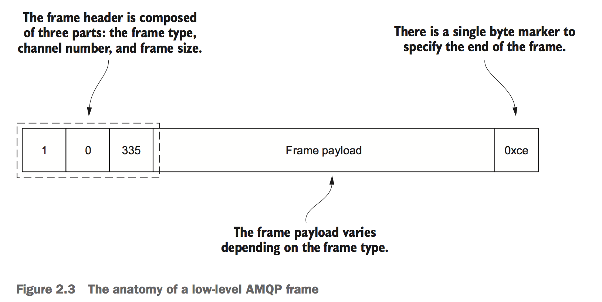
2.1.1 Frame Types
The AMQP specification defines five types of frames:
- Protocol header frame Only used once, when connecting to RabbitMQ.
- Method frame Carries with it the RPC request or response that's being sent to or received from RabbitMQ.
- Content header frame Contains the size and properties for a message.
- Body frames Contain the content of messages.
- Heartbeat frame Sent to and from RabbitMQ as a check to ensure that both sides of the connection are available and working properly.
2.1.1.1 Method frame
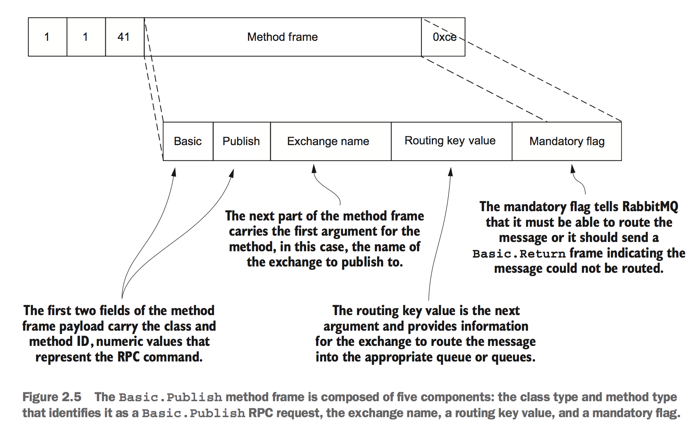
2.1.1.2 Content header frame

2.1.1.3 Body frame
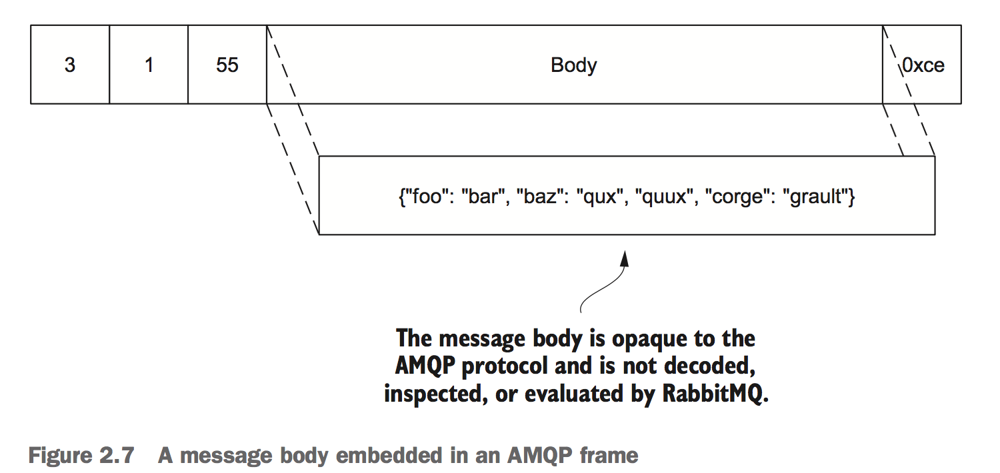
2.2 AMQP Model
The AMQ model logically defines three abstract components in broker software that define the routing behavior of messages:
- Exchange The component of the message broker that routes messages to queues
- Queue A data structure on disk or in memory that stores messages
- Binding A rule that tells the exchange which queue the messages should be stored in
2.3 Protocol Implement
2.3.1 Declaring exchange
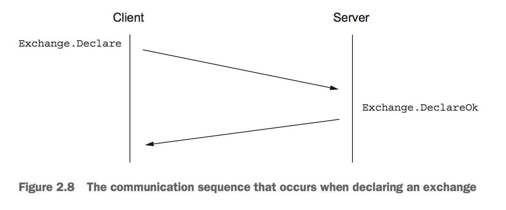
If, for whatever reason, the command should fail, RabbitMQ will close the channel by sending a Channel.Close command.
This response will include a numeric reply code and text value indicating why the Exchange.Declare failed and the channel was closed.
2.3.2 Declaring queue
hide footbox participant "Client" as c database RabbitMQ as r c -> r : Queue.Declare note right exclusive: 设置私有队列，用于限制只有一个消费者的情况 auto-delete: 当最后一个消费者取消订阅的时候，队列自动移除 passive=true: 当队列存在，成功返回，否则返回错误，用于检测队列是否存在 end note r --> c : Queue.DeclareOk
- 消费者和生产者都能使用
Queue.Delare命令来创建队列。 - 如果消费者在同一信道上已订阅了另一个信道的话，则无法再声明队列了，必须先取消订阅。
- 当创建队列时，可以指定队列名称，如果不指定的话，RabbitMQ 会分配一个随机名称并在
Queue.Declare命令的响应中返回。 - 如果需要临时队列只为一个消费者服务的话，可以结合使用
auto-delete和exclusive，当消费者断开连接时，队列就被移除了。 - 发出去的消息如果路由到了不存在的队列的话，RabbitMQ 会忽略它们。因此，一般情况下，生产者和消费者都应该尝试创建队列。
- Should the
Queue.Declarecommand fail, the channel will be closed.
When declaring a queue, there's no harm in issuing the same Queue.Declare command more than once. RabbitMQ will consider subsequent queue declares to be PASSIVE and will return useful information about the queue, such as the number of pending messages in the queue and the number of consumers subscribed to it.
2.3.3 Binding queue to exchange
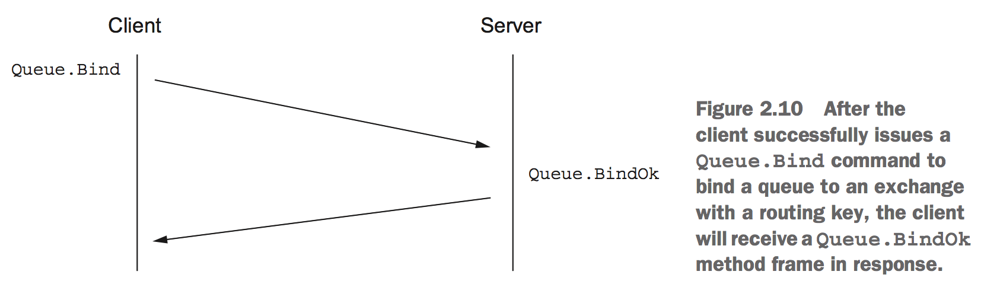
2.3.4 Publishing message
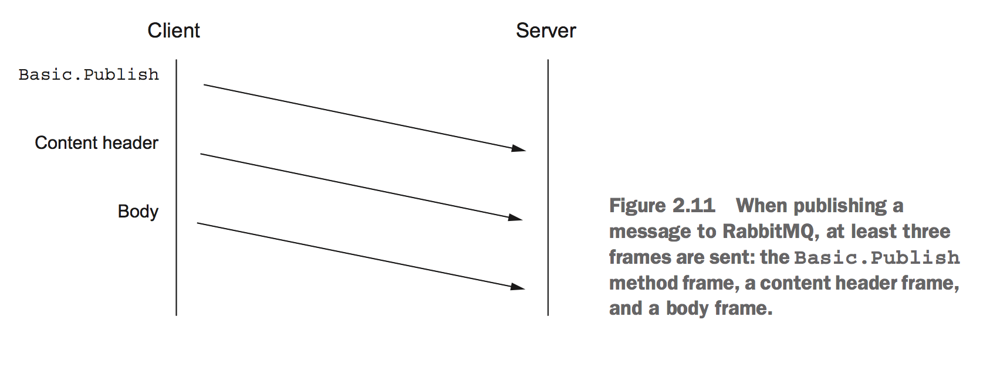
2.3.5 Consuming message
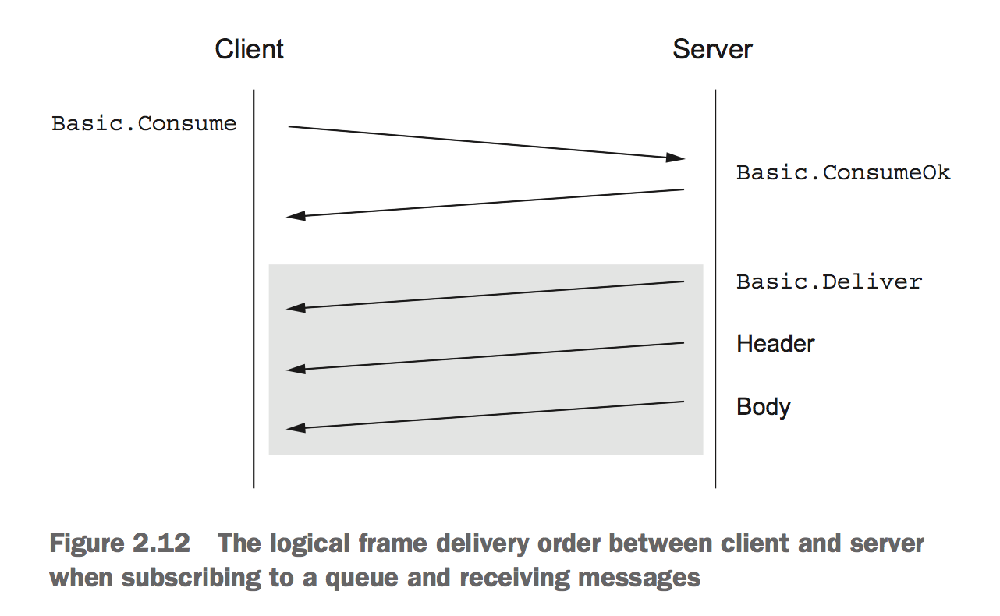
2.3.5.1 no_ack argument for the Basic.Consume command
When set to true, RabbitMQ will send messages continuously until the consumer sends a Basic.Cancel command or the consumer is disconnected.
If the no_ack flag is set to false, a consumer must acknowledge each message that it receives by sending a Basic.Ack RPC request:
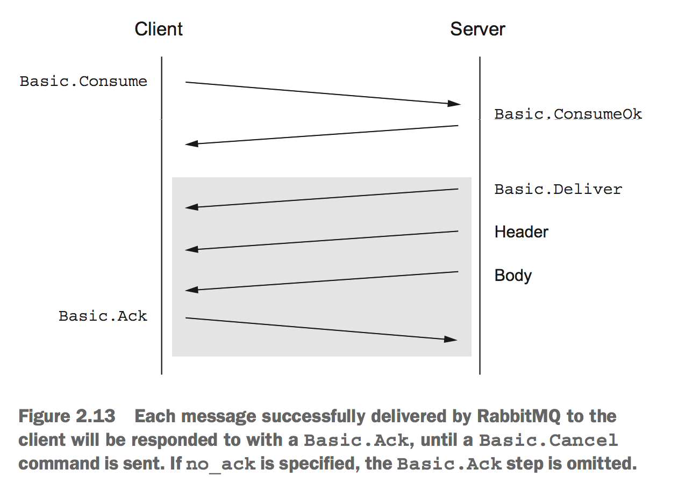
When the Basic.Ack response frame is sent, the consumer must pass with it an argument from the Basic.Deliver method frame
called the delivery tag.
RabbitMQ uses the delivery tag along with the channel as a unique identifier to communicate message acknowledgement, rejection,
and negative acknowledgement.
2.3.6 获取消息
hide footbox participant Client as c database RabbitMQ as q c -> q : Basic.Get q -> c : msg c --> q : Basic.Ack
Basic.Get 命令会订阅消息，获得单条消息，然后取消订阅，因此效率不高。
2.3.7 拒绝消息
hide footbox participant Client as c database RabbitMQ as q q -> c : msg c --> q : Basic.Reject note right requeue=true: RabbitMQ 将消息重新发送给下一个订阅的消费者 requeue=false: 立即把消息从队列中移除，不会发送给新的消费者 end note
requeue=false 的意义在于：RabbitMQ 会支持一个特殊的队列（dead letter）用来存放那些被拒绝而不重入队列的消息。
dead letter 队列可以让管理者通过检测拒绝或未送达的消息来发现问题所在。
因此，如果想使用 dead letter 队列功能的话，需要使用 reject 命令，并将其设为 false 。
2.4 Basic.Properties
| Property | Type | For use by | Suggested or specified use |
|---|---|---|---|
| app-id | short-string | Application | Useful for defining the application publishing the messages. |
| content-encoding | short-string | Application | Specify whether your message body is encoded in some special way, such as zlib, deflate, or Base64. |
| content-type | short-string | Application | If the message is in reference to some other message or uniquely identifiable item, the correlation-id is a good way to indicate what the message is referencing. |
| delivery-mode | octet | RabbitMQ | A value of 1 tells RabbitMQ it can keep the message in memory; 2 indicates it should also write it to disk. |
| expiration | short-string | RabbitMQ | An epoch or Unix timestamp value as a text string that indicates when the message should expire. |
| headers | table | Both | A free-form key/value table that you can use to add additional metadata about your mes- sage; RabbitMQ can route based upon this if desired. |
| message-id | short-string | Application | A unique identifier such as a UUID that your application can use to identify the message. |
| priority | octet | RabbitMQ | A property for priority ordering in queues. |
| timestamp | timestamp | Application | An epoch or Unix timestamp value that can be used to indicate when the message was created. |
| type | short-string | Application | A text string your application can use to describe the message type or payload. |
| user-id | short-string | Both | A free-form string that, if used, RabbitMQ will validate against the connected user and drop messages if they don't match. |
2.5 Guaranteed Publishing
2.5.1 mandatory flag
The mandatory flag is an argument that's passed along with the Basic.Publish RPC command and tells RabbitMQ that if a message isn't routable,
it should send the message back to the publisher via a Basic.Return RPC.
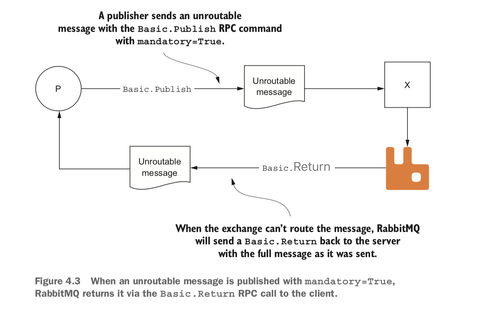
2.5.2 Publisher Confirm
Prior to publishing any messages, a message publisher must issue a Confirm.Select RPC request to RabbitMQ and
wait for a Confirm.SelectOk response to know that delivery confirmations are enabled.
For each message that a publisher sends to RabbitMQ, the server will respond with an acknowledgement response (Basic.Ack) or
a negative acknowledgement response (Basic.Nack).
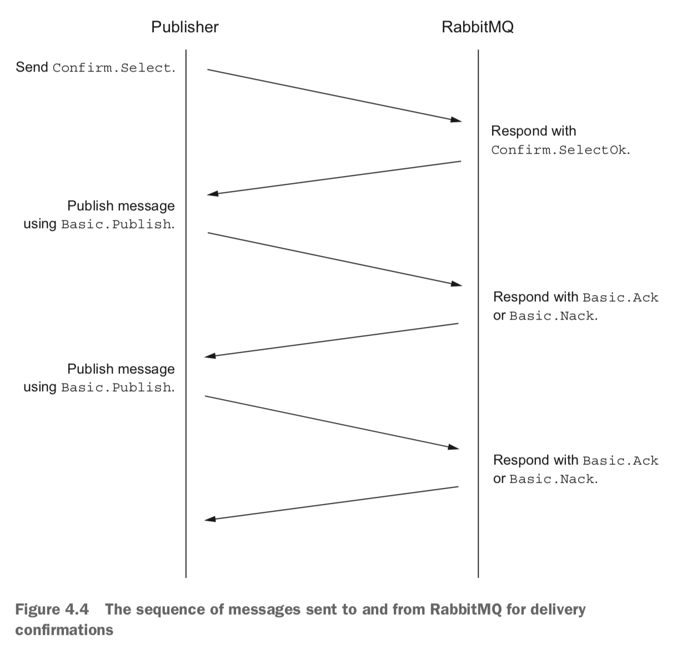
Any application that has enabled Publisher Confirms should be able to receive a confirmation at any point after sending the message.
2.5.3 Alternate exchange

2.5.4 Transaction
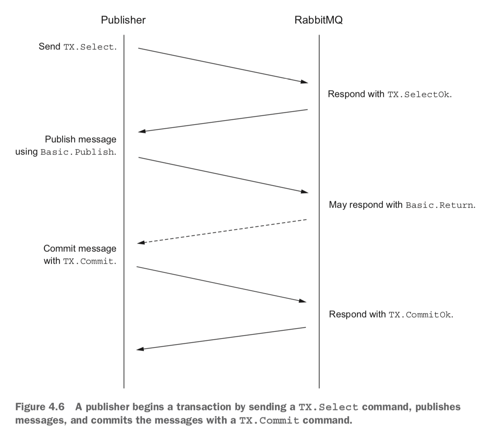
Transaction allows publishers more control over the SEQUENCE. If you're considering transactions as a method of delivery confirmation, consider using Publisher Confirms as a LIGHTWEIGHT alternative.
2.5.5 HA queues
Allows queues to have redundant copies across multiple servers.
HA queues have a single primary server node, and all the other nodes are secondary.
Should the primary node fail, one of the secondary nodes will take over the role of primary node.
Should a secondary node be lost in an HA queue configuration, the other nodes would continue to operate as they were, sharing the state of operations that take place across all configured nodes.
When a lost node is added back, or a new node is added to the cluster, it won't contain any messages that are already in the queue across the existing nodes.
Instead, it will receive all new messages and only be in sync once all the previously published messages are consumed.
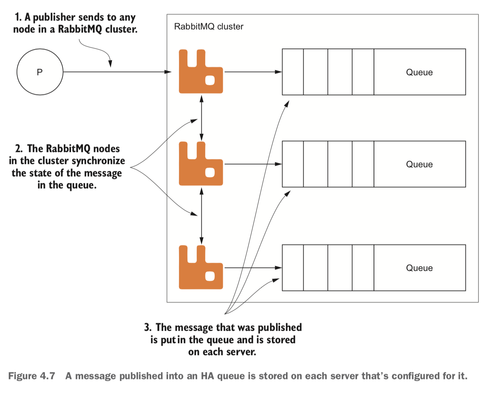
2.5.6 Delivery Mode 2
In addition to delivery-mode of 2, for messages to truly survive a restart of a RabbitMQ broker,
your queues must be declared as durable when they're created.
It's a costly way to guarantee delivery.
3 交换器
3.1 属性
- Name
- Durability (exchanges survive broker restart)
- Auto-delete (exchange is deleted when last queue is unbound from it)
- Arguments (optional, used by plugins and broker-specific features)
3.2 direct
如果路由键匹配的话，消息就被投递到对应的队列。
RabbitMq 会默认实现一个类型为 direct 的，名称为空白字符串的交换器。
当声明一个队列时，一开始该队列会自动绑定到默认交换器， 并以队列名称作为路由键 。
之后可以发送 exchange.declare 命令并设置合适的参数，就可以升级成具体类型交换器。

Figure 16: direct router
3.3 fanout
将收到的消息广播的绑定的队列上。

Figure 17: fanout router
3.4 topic

Figure 18: topic router
.把路由键分为了几部分*匹配特定位置的任意文本#匹配所有规则
3.5 路由

4 RabbitMQ 管理
4.1 启动停止
4.1.1 停止节点
rabbitmqctl stop rabbitmqctl stop -n rabbit@<nodename>
4.1.2 停止应用
rabbitmqctl stop_app
4.2 配置文件
/etc/rabbitmq/rabbitmq.config
4.3 管理用户
4.3.1 创建
rabbitmqctl add_user <username> <password>
4.3.2 删除
rabbitmqctl delete_user <username>
4.3.3 修改密码
rabbitmqctl change_password <username> <new-password>
4.3.4 查看
rabbitmqctl list_users
4.4 管理权限
每条访问控制条目由四部分组成：
- 用户
- vhost
- 需要授予的读/写/配置权限组合
- 权限范围
4.4.1 创建
rabbitmqctl set_permission -p <vhost_name> \ <username> ".*" ".*" ".*"
4.4.2 删除
rabbitmqctl clear_permissions -p <vhost_name> <username>
4.4.3 查看
rabbitmqctl list_permissions -p <vhost_name> rabbitmqctl list_user_permissions <username> # 查看某个用户在所有 vhost 上的权限
4.5 管理 vhost
查看
rabbitmqctl list_vhosts
创建
rabbitmqctl add_vhost <vhost_name>
删除
rabbitmqctl delete_vhost <vhost_name>
4.6 信息查询
4.6.1 查看队列
rabbitmqctl list_queues rabbitmqctl list_queues name messages consumers memory # memory 单位为字节
信息参数包括：
- name
- durable
- auto_delete
- arguments
- pid
- owner_pid
- exclusive_consumer_pid
- exclusive_consumer_tag
- messages_ready
- messages_unacknowledged
- messages_uncommitted
- messages
- acks_uncommitted
- consumers
- transactions
- memory
4.6.2 查看交换器
rabbitmqctl list_exchanges
信息参数包括：
- name
- type
- durable
- auto_delete
- arguments
4.6.3 查看绑定信息
rabbitmqctl list_bindings
参数信息包括：
- source_name
- source_kind
- destination_name
- destination_kind
- routing_key
- arguments
4.6.4 查看集群状态
包括各个节点MQ状态、镜像队列状态等
rabbitmqctl report
4.6.5 接入 Eshell
erl -setcookie abc -name test@<node-name> -remsh rabbit@<node-name> -hidden
退出时要用 Ctrl+G 然后执行 q 命令退出。
spawn(fun() -> etop:start([{output, text}, {interval, 5}, {lines, 10}, {sort, msg_q}]) end).
spawn(fun() -> etop:start([{output, text}, {interval, 5}, {lines, 10}, {sort, reductions}]) end).
5 代码示例
5.1 基本用法
5.1.1 生产者
import pika EXCHANGE = 'hello-exchange' conn_params = pika.ConnectionParameters(host='10.74.68.89', port=45672, socket_timeout=3.0) conn_broker = pika.BlockingConnection(conn_params) # 使用默认 vhost / channel = conn_broker.channel() channel.exchange_declare(exchange=EXCHANGE, exchange_type='direct', passive=False, durable=True, auto_delete=False) msg_props = pika.BasicProperties() msg_props.content_type = 'text/plain' channel.basic_publish(exchange=EXCHANGE, properties=msg_props, body='Hello World', routing_key='hola') conn_broker.close()
5.1.2 消费者
import pika EXCHANGE = 'hello-exchange' QUEUE = 'hello-exchange' TAG = 'hello-consumer' conn_params = pika.ConnectionParameters(host='10.74.68.89', port=45672, socket_timeout=3.0) conn_broker = pika.BlockingConnection(conn_params) channel = conn_broker.channel() channel.exchange_declare(exchange=EXCHANGE, # 如果没有就创建，否则继续 exchange_type='direct', passive=False, durable=True, auto_delete=False) channel.queue_declare(queue=QUEUE) channel.queue_bind(queue=QUEUE, exchange=EXCHANGE, routing_key='hola') def msg_consumer(channel, method, header, body): channel.basic_ack(delivery_tag=method.delivery_tag) print("receive: {}".format(body)) channel.basic_cancel(consumer_tag=TAG) channel.stop_consuming() channel.basic_consume(msg_consumer, queue=QUEUE, consumer_tag=TAG) # 一个 channel 可以有多个订阅，使用 consumer_tag 来标识订阅 print(' [*] Waiting for messages. To exit press CTRL+C') channel.start_consuming()
5.2 发送方确认模式
信道进入 confirm 模式，所有在信道上发布的消息都会被指派一个唯一的 ID 号（从 1 开始）。 一旦消息被投递给所有匹配队列后，信道会发送一个发送方确认模式给生产者应用程序（包含消息的唯一 ID ）。 这使得生产者知晓信息已经安全到达目的队列了。
5.2.1 生产者
#! /usr/bin/env python3 # -*- coding: utf-8 -*- import pika EXCHANGE = 'hello-exchange' conn_params = pika.ConnectionParameters(host='10.74.68.89', port=45672, socket_timeout=3.0) conn_broker = pika.BlockingConnection(conn_params) # 使用默认 vhost / channel = conn_broker.channel() channel.confirm_delivery() channel.exchange_declare(exchange=EXCHANGE, exchange_type='direct', passive=False, durable=True, auto_delete=False) msg_props = pika.BasicProperties() msg_props.content_type = 'text/plain' ack = channel.basic_publish(exchange=EXCHANGE, properties=msg_props, body='Hello World', routing_key='hola') if ack: print("confirm received") else: print("msg lost") conn_broker.close()
5.3 通过 AMQP 实时访问日志
#! /usr/bin/env python3 # -*- coding: utf-8 -*- import pika EXCHANGE = 'amq.rabbitmq.log' conn_params = pika.ConnectionParameters(host='10.74.68.89', port=45672, socket_timeout=3.0) conn_broker = pika.BlockingConnection(conn_params) channel = conn_broker.channel() result = channel.queue_declare(exclusive=True, auto_delete=True) queue_name = result.method.queue # binding_keys = ['info', 'warning', 'error'] binding_keys = ['#'] for binding_key in binding_keys: channel.queue_bind(queue=queue_name, exchange=EXCHANGE, routing_key=binding_key) def msg_consumer(channel, method, header, body): print("[{}]: {}".format(method.routing_key, body.decode('utf-8')), end='') channel.basic_consume(msg_consumer, queue=queue_name, no_ack=True) channel.start_consuming()
6 集群
RabbitMQ 默认不会将队列的内容复制到整个集群上。 如果不进行特别的配置，这些信息仅存在于队列所属的那个节点上。 非所有者节点 只知道队列的元数据 和指向该队列存在的那个节点的指针。

Figure 19: 只有队列的元信息在节点间共享

Figure 20: 交换器中的路由信息在节点间共享
6.1 集群管理
6.1.1 清空节点元数据（重设）
当重设的节点是集群的一部分时，该命令也会和集群中的磁盘节点进行通信。
rabbitmqctl -n <node> reset
6.1.2 加入集群
将新节点加入到集群时，必须列出在集群中的所有磁盘节点，并作为集群命令的参数。
# 将 my_node 加入集群，并使其自己也称为磁盘节点 rabbitmqctl -n <my_node> cluster <other_node> <my_node>
6.1.3 查看集群信息
rabbitmqctl cluster_status
7 持久性
RabbitMQ 支持消息的持久化，也就是数据写在磁盘上。消息队列持久化包括 3 个部分：
- exchange 持久化，在声明时指定
durable=1 - queue 持久化，在声明时指定
durable=1 - 消息持久化，在投递时指定
delivery_mode=2（1 是非持久化）
如果 exchange 和 queue 都是持久化的， 那么它们之间的 binding 也是持久化的 。
如果 exchange 和 queue 两者之间有一个持久化，一个非持久化，其对应的 binding 就无法得到恢复。
但是，即使设置了持久化，也不能百分百保证消息不会丢失。有很小的概率在 RabbitMQ 接受到消息后，还没来得及写到磁盘，就发生重启了。
另外，RabbitMQ 也不会对每一个消息执行 fsync(2) ，消息可能仅仅写入到缓存，还没来得及 flush 到硬件存储。
因此 RabbitMQ 的持久性设置并非足够安全，对于普通的工作队列也许够用了。
如果需要加强的安全保证，可以把发布消息的代码封装在 事务 里。